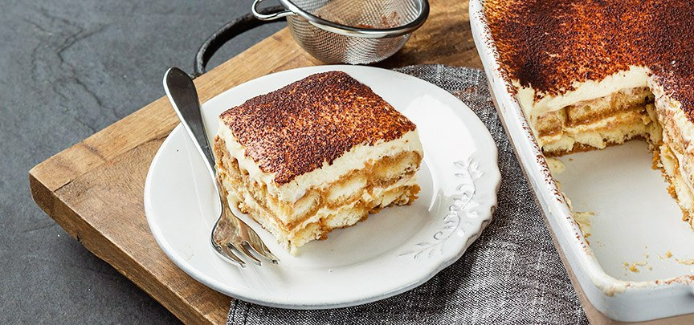

Tiramisu met koffie

Ingrediënten (voor 6 personen)
- 500g mascarpone
- 3 eieren
- 150g griessuiker
- zakjes vannillesuiker
- 2 zakjes boudoirsuikers
- 3 kopjes sterke koffie
- 40ml amaretto
- poedersuiker
- cacaopoeder
Bereiding
- Splits de eieren. Meng de dooiers met de mascarpone en de fijne suiker. Klop het eiwit stijf samen met de vanillesuiker. Spatel het door de mascarpone.
- Meng de koffie met de amaretto. Dompel er de helft van de koekjes in en schik ze in een schaal. Bestrijk met de helft van de mascarponecrème en bestrooi met cacaopoeder.
- Klop dan de rest van de melk door het beslag zodat het lichter wordt. Vind je het beslag nog te dik, voeg dan eventueel nog wat extra melk toe (in totaal heb je 500 à 600 ml melk nodig).
- Leg daarop de rest van de koekjes en bestrijk met de rest van de crème. Eindig met cacaopoeder en poedersuiker. Zet 1 nacht in de koelkast